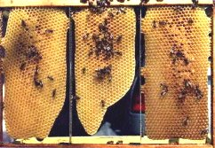

Il favo è costruito dalle api utilizzando piccole scaglie di cera prodotta da apposite ghiandole situate nell'addome. La forma esagonale consente di
utilizzare lo spazio nel modo più razionale possibile. Questo che vedete in sottofondo è stato costruito tutto con cera nuova (il colore è molto chiaro) e senza l'inserimento del foglio cereo (che ha prestampato il fondo esagonale che poi le api completano) che viene messo dall'apicoltore per facilitare la costruzione all'interno di un telaino di legno, che consente una facile estrazione dall'arnia.